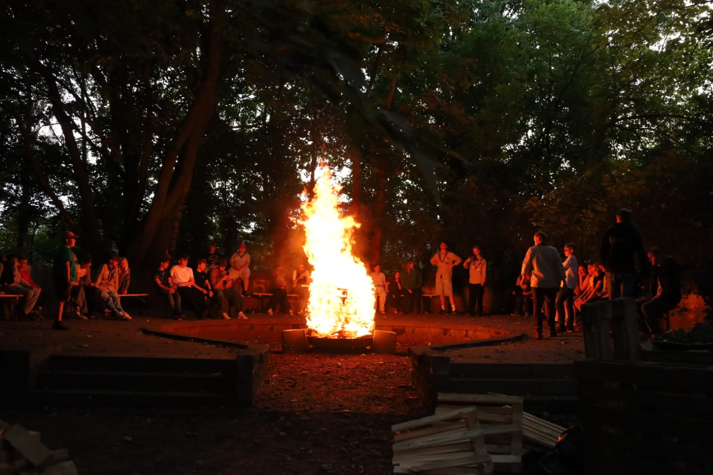

Über uns
Wir sind der Pfadfinderstamm 17&4 Papenburg und gehören zur Deutschen Pfadfinderschaft Sankt Georg (DPSG). Unsere Gruppen treffen sich regelmäßig zu spannenden Aktionen, Lagern und Projekten – für Kinder und Jugendliche jeden Alters.